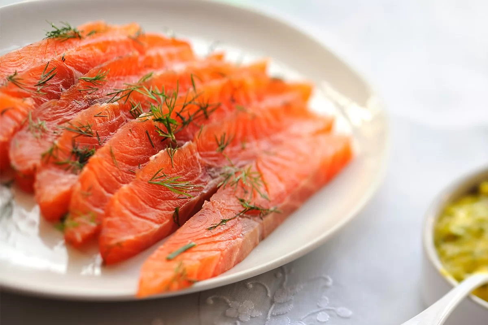

Salmon Gravlax

Ingredients
- Fresh Atlantic or Pacific salmon, or trout
- 1 bunch of fresh dill
- Freshly ground black pepper (to taste)
- Fine sea salt
- Maple syrup
- 1 lime (zest only)
- Kitchen scale (to weigh the fish)
- 1 large ziploc bag
Instructions
- Freeze the salmon for at least 24 hours to kill any parasites. Thaw it in the fridge before starting the curing process.
get
- Peel the lime. Set aside the zest.
- Weigh the salmon using a kitchen scale. Multiply the weight by 0.025 (2.5%) to determine the amount of salt needed.
- Rub both sides of the salmon evenly with the measured salt, lime zest, black pepper, chopped dill, and a drizzle of maple syrup.
- Place the seasoned salmon into a ziploc bag, seal it, and refrigerate for 12 to 24 hours.
- Remove the salmon from the bag. Discard the dill and lime zest, then pat the fish dry on both sides using paper towels.
- Place the salmon on a wire rack (over a tray or plate) in the fridge and let it air-dry for at least 4 hours.
- After drying, the salmon is ready to slice and serve. Enjoy!
Home